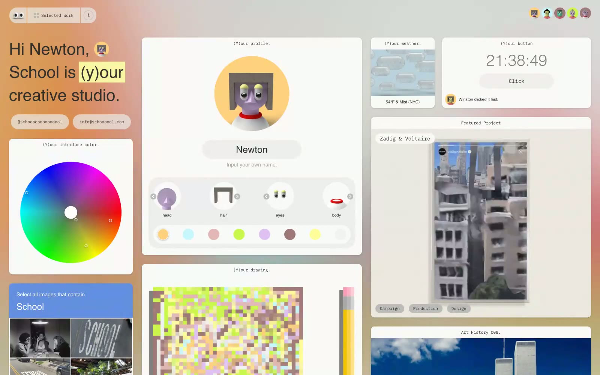

School 的 Design.md 主题展示，围绕教育服务、公共服务、浅色界面、AI组织页面。
Explore School's light Other design system: Ink #303030, Paper White #FFFFFF colors, IBM Plex Mono, Helvetica typography, and DESIGN.md for AI agents.

#303030: #303030#F2F2F2: #F2F2F2#FFFFFF: #FFFFFF#DBDBDB: #DBDBDB#808080: #808080#C2C2C2: #C2C2C2#F9F5A2: #F9F5A2#648FE0: #648FE0#0064E2: #0064E2#b0c4d8: #b0c4d8#8ab4d4: #8ab4d4#6a9cbf: #6a9cbfdisplay: IBM Plex Monobody: IBM Plex Monomono: IBM Plex Monohints: IBM Plex Mono